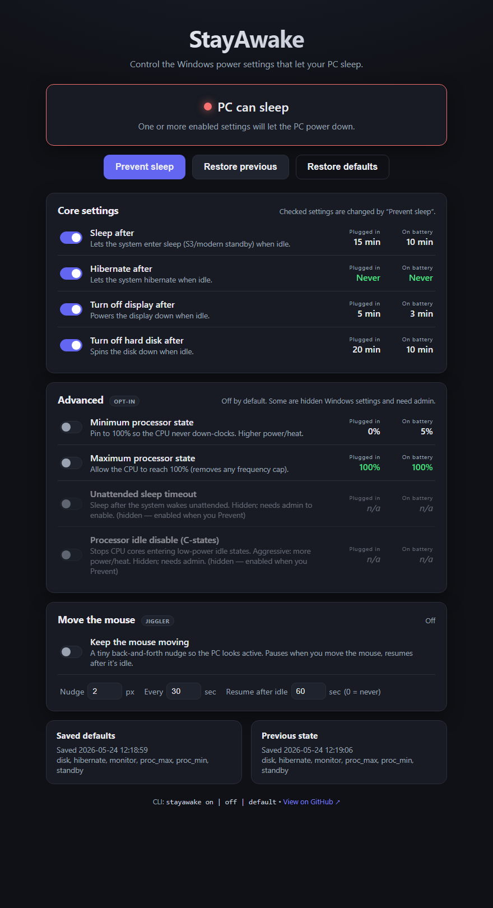
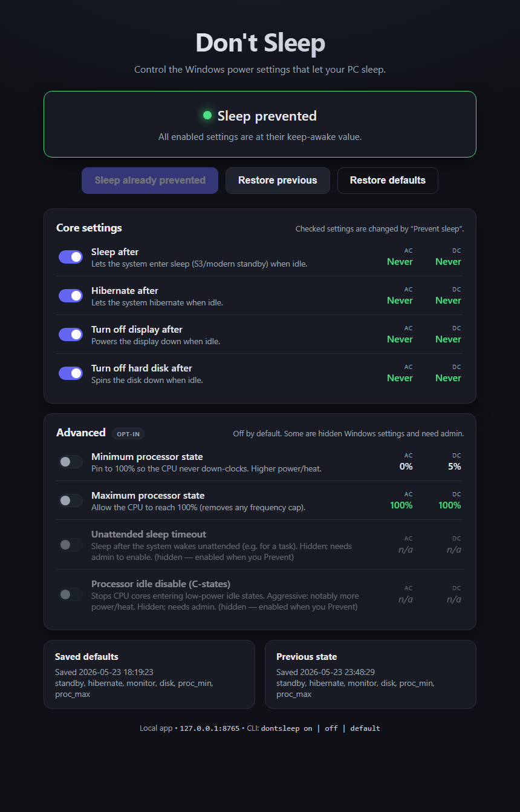

Stop your Windows PC from sleeping — from a web UI or a one-word command. Safely switch back anytime.
irm https://stayawa.ke | iex
Downloads a single stayawake.exe to %LOCALAPPDATA%\stayawake, adds the stayawake command to your PATH, and launches the app. No runtime, no admin required.


powercfg. Nothing leaves your machine; the server only listens on 127.0.0.1.stayawake on/off/default headless. Same logic, same result.| Command | Action |
|---|---|
stayawake | Open the web UI |
stayawake on | Prevent sleep now |
stayawake off | Restore previous values |
stayawake default | Restore Windows defaults |
stayawake uninstall | Restore defaults and remove everything |